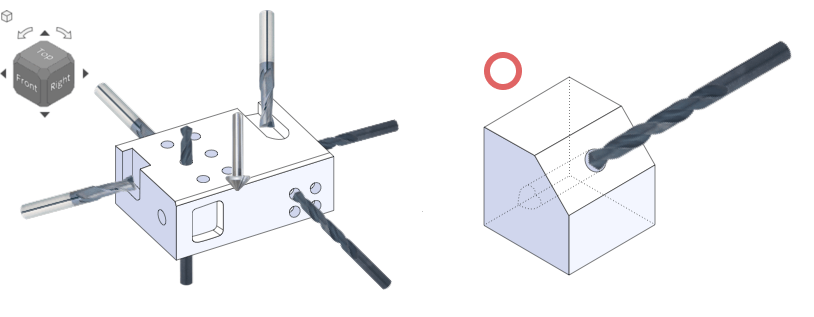
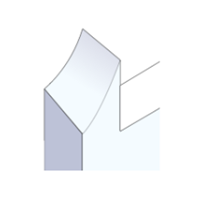
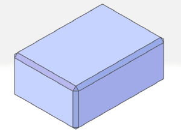
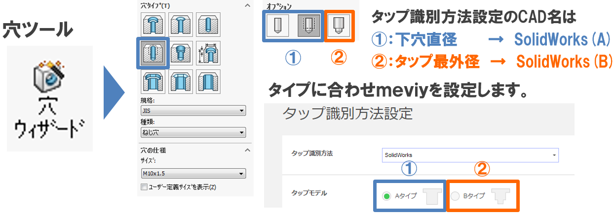
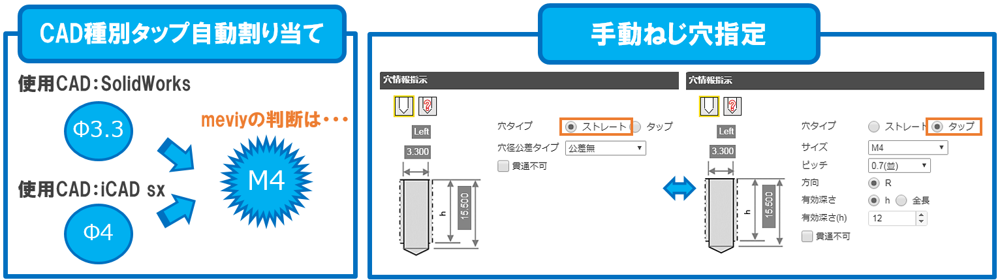
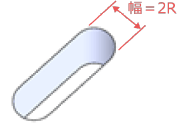
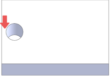
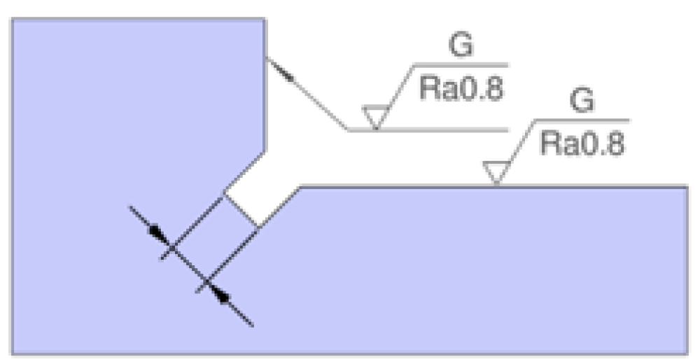
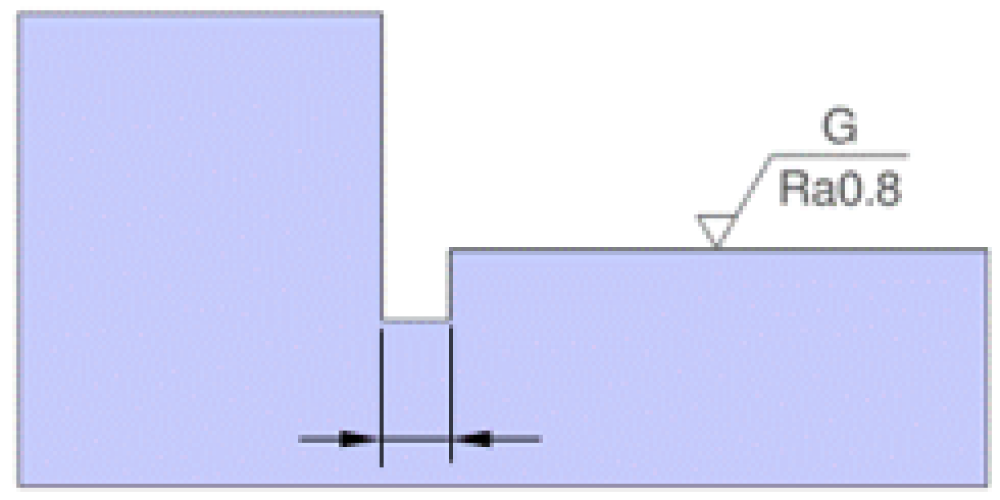
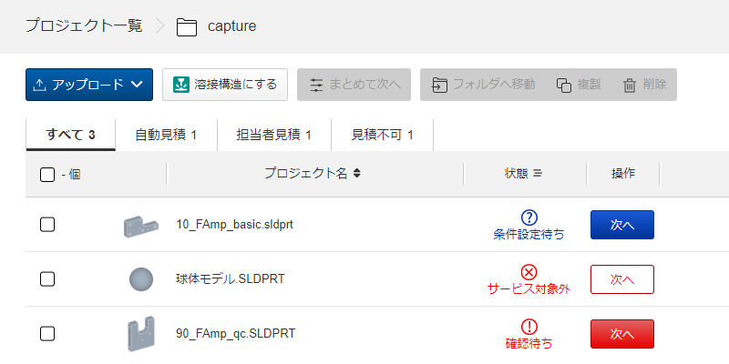

切削（角物）
直方体ブロックから、6方向（材料面に垂直/平行）からの切削加工でブラケットやプレート部品を製作するサービスです。 37材質に対応し、穴・タップ・ポケット・精度穴・はめ合い・熱処理・表面処理・刻印まで自動見積で指定できます。 最短1日目出荷の超短納期から、30%割引の長納期まで選べます。
1. 加工方式と対象形状／対象外形状
加工方向
- 直方体の材料面に対し、垂直/平行の6方向から加工します。
- 角度の必要な加工も、多軸加工機や専用治具で一部対応可能です。
- 6面方向に対して穴軸が傾いた斜め穴は加工可能です（斜め穴は担当者見積）。

見積もり可能形状（要点）
- ポケット（エンドミル加工）
- エンドミルのみで6方向から加工できる形状が対象。クローズポケット（周囲4面が閉じた形状）は、隅部4箇所に内Rが無いとピン角になり対象外。
- 口元面取り
- ポケット・穴の口元面取りはC15以下なら対象。エンドミルで加工可能な開放形状はC15超でも対象になる場合あり。
- 穴
- 多方向からの加工でも対象。ザグリ下段に複数穴・長穴があっても対象。2段穴は2段まで、中段が最小の形状のみ対象（上から段形状・中段が最大の中ぐりは対象外）。
- 長穴
- 多方向加工・ザグリ複数も対象。2段以上も対応可（中段が最大の中ぐりは対象外）。穴と異なり上から段形状も対象。
- 穴＋面取り/R
- 穴・長穴の口元面取りはC15以下、口元外Rは付くと対象外。隅部Rが0.5超だと対象外。曲面への面取り・Rは対象外。
サービス対象外形状（設備の都合）
以下の工程を要する部品は見積をお断りしています。

2. 対応材質と材料特性
鉄・プリハードン鋼・工具鋼・アルミ・ステンレス・銅/真鍮・樹脂・ウレタンの計37材質に対応します。 形状・サイズによって選択可能な材質が異なります。表面処理用の吊り穴が必要な場合があります（後述）。
主な材料特性（参考値・保証値ではありません）
| 材質 | 引張強さ N/mm² | 耐力 N/mm² | 比重 | 熱伝導率 W/m·K | 特徴 |
|---|---|---|---|---|---|
| SS400 | 400〜510 | 215〜355 | 7.87 | 58 | 一般構造用圧延鋼。低コスト・加工良好。 |
| S45C(相当) | 570〜750 | 330〜490 | 7.87 | 45 | 炭素鋼。焼入れで強度・耐摩耗性向上。 |
| SCM440 | 950〜1100 | 800〜950 | 7.85 | 42.7 | 高強度・高靭性。焼入れ対応。 |
| NAK55(相当) | 1100〜1300 | 950〜1150 | 7.8 | 30 | プリハードン鋼。HRC37〜43、被削性良好。 |
| SKD11 | 1800〜2000 | 1500〜1700 | 7.8 | 20 | 合金工具鋼。高硬度・高耐摩耗性。 |
| DC53 | 1890 | 1780 | 7.87 | 23.9 | 冷間ダイス鋼。SKD11より被削性・靭性良好。 |
| A2017 | 390〜500 | 250〜350 | 2.79 | 130 | ジュラルミン。強度高、耐食性やや劣る。 |
| A5052 | 210〜265 | 125〜190 | 2.68 | 138 | 最も一般的なアルミ合金。切削性に優れる。 |
| A6061 | 260〜310 | 240〜270 | 2.7 | 167 | 耐食性トップクラス。T6で高強度。 |
| A7075 | 510〜580 | 430〜500 | 2.8 | 130 | 超々ジュラルミン。高強度・軽量。 |
| SUS303 | 520〜750 | 205以上 | 7.93 | 16.2 | 快削系オーステナイト。切削性に優れる。 |
| SUS304 | 520〜750 | 205以上 | 7.93 | 16.2 | 汎用ステン。耐食性・溶接性良好。 |
| SUS316 | 520〜700 | 205以上 | 7.98 | 13 | 耐食性・耐孔食性向上。海水環境向け。 |
| SUS430 | 450〜600 | 205以上 | 7.7 | 26 | 磁性フェライト系。Ni無し、耐食性は低め。 |
| C1100 | 195〜265 | 120〜185 | 8.94 | 391 | タフピッチ銅。導電・熱伝導に優れる。 |
| C3604-LCd | 335〜540 | 270〜410 | 8.43 | 117 | 快削真鍮。切粉分断、精密部品向け。 |
樹脂・ウレタンの特性（参考値）
| 材質 | 引張強さ N/mm² | 比重 | 連続使用温度 ℃ | 特徴 |
|---|---|---|---|---|
| POM（ポリアセタール） | 60〜68 | 1.41 | 95〜100 | 機械強度・耐摩耗・寸法安定性に優れる。低コスト。 |
| MCナイロン（標準） | 96 | 1.16 | 120 | 強度・耐薬品性良好。吸水性高く寸法安定性に劣る。 |
| PTFE（ふっ素） | 13.7〜34.3 | 2.2 | 260 | 耐熱・耐薬品・摺動性が非常に高い。バリ発生しやすい。 |
| PEEK | 98〜116 | 1.32 | 250〜260 | 熱可塑性樹脂で最高レベルの耐熱・機械強度。高価。 |
| PPS | 79〜85 | 1.35 | 220 | 耐熱・寸法安定性に優れる。PEEKより安価。 |
| ABS | 39〜54 | 1.05 | 60〜95 | 低コスト、耐衝撃性が高い。接着加工可。 |
| 標準ウレタン A90 | 29.7 | 1.13 | 70 | ショア硬度90。エーテル系で耐加水分解性あり。 |
| 標準ウレタン A70 / A50 | 35.3 / 31.8 | 1.2 | 70 | ショア硬度70/50。エステル系、緩衝・衝撃吸収。 |
3. 見積もり可能なサイズ
外形は長さ(X)・幅(Y)・厚み(Z)で規定されます。下記は自動見積の規格範囲です。 担当者見積では (X)2,000 × (Y)1,000 × (Z)200mm まで実績があります。
| 規格 | 長さ(X) | 幅(Y) | 厚み(Z) |
|---|---|---|---|
| 通常規格 | 10〜1,000mm | 10〜600mm | 5〜70mm |
| 薄板規格 | 5〜100mm | 5〜100mm | 3mm以上〜5mm未満 |
| 厚板規格 | 70mm超〜400mm | 70mm超〜400mm | 70mm超〜130mm |
| ミガキ材フラットバー | 10〜500mm | 10〜125mm | 3〜30mm |
| 材料プレート | 10〜500mm | 10〜300mm | 5〜50mm |
| ウレタン | 5〜600mm | 5〜400mm | 1〜50mm（ショア50は1〜30mm） |
材質別の自動見積 厚み(Z)対応
| 材質 | 薄板 (3≦Z<5) | 通常 (5≦Z≦70) | 厚板 (70<Z≦130) | 材料プレート (5≦Z≦50) |
|---|---|---|---|---|
| SS400・S45C(相当)・S50C(相当) | ○ | ○ | ○ | ○ |
| SS400焼鈍材・S50C調質材・SCM440・NAK55 | × | ○ | × | ○※ |
| SKD11・SK105・SKS3・DC53 | × | ○ | × | × |
| A2017・A5052・A5083・A6061・A7075 | ○ | ○ | ○ | ○※ |
| SUS303・SUS304(焼鈍材含む)・SUS316L | ○ | ○ | × | ○※ |
| SUS316 | ○ | Z≦68 | × | Z≦30 |
| SUS430 | ○ | Z≦30 | × | Z≦30 |
| C1020・C1100・C2801P（銅・真鍮） | ○ | ○ | × | × |
| 樹脂（上記以外の一般グレード） | × | Z≦60 | × | Z≦50 |
| ウレタン | 薄板規格 1≦Z≦50（A50は1〜30） | 厚板（50<Z）は非対応 | ||
4. 表面処理
材質区分ごとに対応する表面処理が異なります。指定なき場合は無処理（生材）です。 各種クロメート/硬質クロム/アルマイト/不動態化/アロジン処理相当は、部品を吊って処理槽に浸すため吊り穴形状が必要です（後述）。
| 表面処理 | 耐食性 | 耐摩耗性 | 硬度 | 装飾性 | 導電性 | 特徴 |
|---|---|---|---|---|---|---|
| 無電解ニッケル | ○ | ○ | ○ | △ | ○ | 化学反応で均一被膜。複雑形状・高精度維持に適。 |
| 四三酸化鉄皮膜 | △ | × | × | △ | ○ | 黒錆で赤錆抑制。低コスト・美観良好。 |
| 三価クロメート（白/黒） | △ | × | × | △ | ○ | クロム化成皮膜。色は化成後の色調。 |
| 硬質クロム（フラッシュ） | ○ | ○ | ○ | ○ | △ | 膜厚5μ以下、硬度Hv750〜程度。摺動部に。 |
| 低温黒色クロム | ○ | △ | △ | ○ | ○ | 密着性高く被膜割れしにくい。 |
| パーカー処理 | △ | △ | △ | × | × | リン酸塩皮膜。防錆・塗装密着性向上。色味指定不可。 |
| 窒化処理 | ○ | ○ | ○ | × | × | 表面のみ硬化、歪み少。ガス窒化/塩浴軟窒化（指定不可）。 |
| 白/黒アルマイト（つや消し含む） | ○ | △ | △ | ○ | × | アルミ用。着色・装飾性に優れる。 |
| 硬質アルマイト（白/白つや消し） | ○ | ○ | ○ | △ | × | 膜厚10〜20μ。硬度・潤滑性向上。黄褐色〜素地色。 |
| 赤/金アルマイト | ○ | △ | △ | ○ | × | 染料着色。色味は写真参考、保証対象外。 |
| 不動態化処理 | ○ | × | × | △ | ○ | SUS用。極薄酸化被膜で耐食性向上。 |
| アロジン処理相当（三価クロム化成） | ○ | × | × | △ | ○ | アルミ用。RoHS適合・導電性あり。電子機器筐体向け。 |
材質区分ごとの選択可能な表面処理
| 区分 | 選択可能な表面処理 |
|---|---|
| 鉄 | 無処理／四三酸化鉄皮膜／無電解ニッケル／三価クロメート(白・黒)／硬質クロム(フラッシュ)／低温黒色クロム／パーカー処理／窒化処理 |
| プリハードン鋼(NAK55) | 無処理／四三酸化鉄皮膜／無電解ニッケル／三価クロメート(白・黒)／硬質クロム／低温黒色クロム |
| 工具鋼(SKD11/DC53/SK105/SKS3) | 無処理／四三酸化鉄皮膜／無電解ニッケル／硬質クロム／窒化処理 |
| アルミ | 無処理／各アルマイト(白・黒・つや消し・硬質・赤・金)／無電解ニッケル／アロジン処理相当 |
| SUS | 無処理／不動態化処理／低温黒色クロム ※SUS304-D・SUS430は不動態化処理不可 |
| 銅・真鍮／樹脂／ウレタン | 無処理のみ |
5. 熱処理（焼入れ）
指示がなければ生材です。全体焼入れ（ズブ焼入れ／真空焼入れ／高周波相当）を指定できます。 焼入れ後にブラスト処理を行う場合があり（精度変化なし・種類指定不可）、仕上げで研削加工が入る場合があります。研磨指示はできません。
焼入れ対応材質と選択可能な硬度（HRC）
| 材質 | 焼入れ種 | 標準硬度 | 自動見積可能な硬度範囲 |
|---|---|---|---|
| SKD11 | ズブ/真空 | HRC58〜63 | HRC50〜63 |
| SCM440 | ズブ/真空 | HRC50〜55 | HRC30〜55 |
| S50C(相当) | ズブ/真空 | HRC35〜45 | HRC30〜50 |
| S45C(相当) | ズブ/真空 | HRC30〜40 | HRC30〜45 |
| DC53 | ズブ/真空 | HRC58〜63 | HRC50〜63 |
| SK105(SK3相当) | ズブ/真空 | HRC58〜63 | HRC58〜63 |
| SKS3(相当) | ズブ/真空 | HRC58〜63 | HRC58〜63 |
焼入れ品のサイズ
- X寸
- 10〜300mm
- Y寸
- 10〜150mm
- Z寸
- 8〜60mm
6. 設計ガイドライン（穴・ポケット・薄肉・モデリング）
製造は3D CADデータを「正」として行います。以下のモデリングルール・規格を守ってください。
3Dモデリング時の留意点
- エンドミル軌跡の終点・折り返しにはRが必要：0.75以上のRをモデリング。必要なRはポケット深さで変わります。Rが大きいほど太い工具で加工でき、加工時間短縮・コストダウンになります。
- エンドミルのノーズRはモデリング不要：ノーズR（角部の極小R）があると加工方向を判定できず自動見積できません。
- C0.5超の面取りはモデリングが必要：ピン角またはC0.5以下のモデルは、C0.1〜0.5以下の仕上がりになります。
- 表面処理用の吊り穴が必要（各三価クロメート/硬質クロム/各アルマイト/不動態化/アロジン処理相当）。下記から2つ以上を組み合わせてモデリング：
- ø3.5以上の貫通穴（精度穴は不可）
- 幅3.5以上の長穴（精度長穴は不可）
- 幅3.5以上のクローズポケット
- M5以上の貫通タップ穴


各種穴の認識条件
- 穴として認識
- 非貫通/貫通の円柱形状、90°口元面取り付き、一段穴・二段穴(中段最小)など。「ストレート穴」「精度穴」に切替可能。穴径が閾値に当たれば「タップ穴」「インサート穴」「皿穴」にも切替可能。穴中心から寸法公差を指定できます。
- ストレート穴
- 初期認識でタップ穴・皿穴に該当しなかった穴。精度指定なし。
- 精度穴
- ストレート穴の穴径公差タイプを変更して設定。径精度と有効深さを指定可能。
- タップ穴
- 「タップ識別方法設定」と拡張子ごとの下穴径ロジックでモデル穴径から自動識別（M2〜M24）。手動割当も可能（例：M6=ø4.9〜6、M10=ø8.3〜10）。穴コマンドによるモデリング推奨。
- インサート穴
- アルミ・樹脂のみ。タップ穴同等ロジックで識別（M2〜M16）。インサート材質はSUS304、呼び長さは0.5D/1D/1.5D/2D。
- 皿穴
- 円錐角度90°、d>3.0mm、かつ D>1.4d（d≤4.0）／D>1.7d（d>4.0）。
- その他穴（原則対象外）
- 先細り2段穴・90°以外の口元面取り・テーパ穴・口元フィレット・切削ねじ山。斜め穴のみ担当者見積で対応可。
- 長穴
- 幅＝2Rの貫通/非貫通形状（切欠き・90°口元面取り含む）。「精度長穴」に変更可、円弧中心から寸法公差を指定可能。


各種穴・ポケットの規格（加工深さの目安）
最大値は目安です。形状・材質・他の見積条件により変化します。径13mm前後でドリル加工とエンドミル加工が切り替わります（例：SS400でø12.9はドリル最大200mm、ø13.1はエンドミル最大48mm）。
| ストレート穴（ドリル加工）径 | 加工深さ目安（鉄系・SUS・アルミ・銅/真鍮） |
|---|---|
| 1.0〜1.9 | 40mm |
| 2.0〜3.2 | 150mm |
| 3.3〜4.2 | 180mm |
| 4.3〜6.9 | 200mm |
| 7.0〜9.9 | 220mm |
| 10〜20 | 300mm |
精度穴の自動見積可能な精度範囲
はめ合い公差はIT7級以上を指定可能。両側公差・片側公差(レンジ)の最小値は径区分で異なります。
| 径（超〜以下） | 両側公差 最小値 | 片側公差 最小値（レンジ） |
|---|---|---|
| 3〜6 | 0.006 | 0.012 |
| 6〜10 | 0.008 | 0.015 |
| 10〜18 | 0.009 | 0.018 |
| 18〜30 | 0.011 | 0.021 |
| 30〜50 | 0.013 | 0.025 |
| 50〜80 | 0.015 | 0.03 |
| 80〜120 | 0.018 | 0.035 |
| 120〜180 | 0.02 | 0.04 |
| 180〜250 | 0.023 | 0.046 |
| 250〜400 | 0.026〜0.029 | 0.052〜0.057 |
| 400〜500 | 0.032 | 0.063 |
タップ穴・インサート穴・段穴・皿穴・ポケット
- タップ穴有効深さ
- M2〜M24（並目/細目）。有効深さ目安は材質で変化（鉄/アルミ/SUSは概ねタップ径×5、プリハードン鋼/工具鋼は×3〜4、樹脂は×6まで、ミガキ材は×2前後）。インチタップ(UNC/UNF)は鉄/アルミ/SUSのみ対応。ねじ山2山確保できない場合あり、締結力が必要なら3山以上を推奨。
- インサート穴
- M2〜M16。呼び長さ0.5D/1D/1.5D/2D（ミガキ材は1D/1.5D/2D）。アルミ・樹脂のみ。
- 1段穴・2段穴
- 各段でストレート穴/精度穴/タップ穴を自由に組合せ可能。2段穴は2段まで対象。上段がタップ穴のとき段の境目に下穴円錐が発生する場合あり。
- 皿穴
- モデル通り加工します。
- 長穴
- 幅により加工深さが変化（例：鉄系で幅3以下→≦10mm、幅20超→≦100mm）。
- ポケット
- 隅部Rの大きさで加工方向と工具径を認識（Rがそのまま工具径）。Rが大きく工具が太いほど深い加工が可能。Rに対する加工深さ目安が材質別に規定（例：鉄でR1.5〜3→≦24mm、R10超→≦80mm）。
薄肉判定ロジック（加工限界）
加工限界値未満の薄肉があると破れ・歪み・公差外れが生じます。限界値を下回ると「品質同意事項」が表示され、可否回答が必要です。同意不可なら自動見積不可（コメント記入の上、担当者見積）。
| 箇所 | 条件 | 加工限界(mm) |
|---|---|---|
| ストレート穴と他形状 | 全材質 ø2〜5 / ø5超 | 0.8 / 1.0 |
| 精度穴と他形状 | 金属 ø2以上 / 樹脂(POM等) / ベークライト | 0.8 / 1.5 / 2.0 |
| タップ穴と他形状 | 全材質 M2〜M5 / M6〜M10 / M12以上 | 0.8 / 1.0 / 1.5 |
| インサート穴と他形状 | 全材質 M2〜M5 / M6〜M10 / M12 | 2.0 / 3.1 / 3.9 |
| 皿穴と他形状 | 全材質 ø2〜5 / ø5超 | 0.8 / 1.0 |
| ザグリ穴底面と他形状 | 金属 ø3〜6 / ø6超、樹脂 | 0.8 / 1.0、樹脂1.0 |
| 長穴・ポケットのストレート部 | 全材質 | 1.0 |
| 穴先端と他形状 | 全材質 | 2.0 |

3Dモデルと仕上りに差異が生じる形状
- ピン角の隅部・角部：角部はC0.1〜0.5以下、隅部はR0.1〜R0.5以下の仕上がり。
- 止まり穴の底面：モデルが平面でも仕上りが円錐になる場合あり（逆も）。フラットが必須なら「ø○○、深さ○○ 底面フラット」と記入し担当者見積。
- タップ穴・精度穴の下穴：有効深さが「モデル深さ−下穴残り深さ参考値」を超えると下穴貫通・干渉の恐れ（下穴残り深さ参考値＝ピッチ×2.5+2mm）。
- ポケット研削指示時のコーナー逃げ：隅部に逃げ溝（幅2〜3mm、最大4mm）・逃げ穴（ø2〜3、最大ø4）ができます。


7. 公差・精度
3D CADアップロード段階では、外形寸法と穴情報以外の寸法・公差は表示されません（任意公差の指定を想定）。指示なき部位には下記の普通許容差が適用されます（原点を加工基準とし、原点は任意に移動可）。
指示なき加工寸法の普通許容差（JIS B 0405:1991 / B 0419:1991 抜粋）
| 長さ寸法（中級 m） | 0.5〜3 | 3超〜6 | 6超〜30 | 30超〜120 | 120超〜400 | 400超〜1000 |
|---|---|---|---|---|---|---|
| 許容差 | ±0.1 | ±0.1 | ±0.2 | ±0.3 | ±0.5 | ±0.8 |
| 角度寸法（中級 m）短辺長 | 10以下 | 10超〜50 | 50超〜120 | 120超〜400 | 400超 |
|---|---|---|---|---|---|
| 許容差 | ±1° | ±30′ | ±20′ | ±10′ | ±5′ |
- 面取り部（粗級 C）
- 0.5〜3=±0.4／3超〜6=±1／6超=±2
- 直角度（普通公差 K）
- 短辺100以下=0.4／100超〜300=0.6／300超〜1000=0.8
- 真直度・平面度（普通公差 K）
- 10以下=0.05／〜30=0.1／〜100=0.2／〜300=0.4／〜1000=0.6
- ミガキ材フラットバーの幅(Y)・厚み(Z)
- SS400-D・S45C-D・SUS304-DはJIS IT13級（例：3超〜6=−0.18〜0、120超〜180=−0.63〜0）。A6063SはJIS H 4040規格を適用。全長(X)等は上記普通許容差。
指定可能な寸法公差（最小レンジ）
表示されていない部位に任意の寸法公差を指定できます。最小レンジは形状要素の組合せで異なります。
| 材質 | ブランク面・ポケット・精度穴・精度長穴 同士 | ストレート穴/タップ/皿穴/長穴 を含む |
|---|---|---|
| 鉄・プリハードン鋼・工具鋼・SUS・銅/真鍮・アルミ | 0.02 | 0.2 |
| 大サイズ領域(X>600) | ブランク面同士0.1(±0.05)／ポケット-精度穴等0.04(±0.02) | 0.2(±0.1) |
| ミガキ材フラットバー | 0.2 | 0.2 |
| 樹脂 | 0.1 | 0.2 |
穴深さ公差・有効深さ公差／角度公差
- 穴深さ公差
- 止まりのストレート穴・止まりの長穴に指定可。自動見積レンジ0.1以上（0.04≦レンジ<0.1は担当者見積）。ストレート穴に設定すると穴底は自動的にフラット指定になります。
- 有効深さ公差
- 精度穴に指定可。タップ/インサート/各種下穴/皿穴は指定不可。
- 角度公差
- 面と面の角度（ブランク面・ポケット面）に指定可。自動見積0.16°≦Θ≦10°（0.02°≦Θ<0.16°は担当者見積）。焼入れ・窒化処理選択時は自動見積2°≦Θ≦10°。角度は10進法表記（60進法非対応）。選択面の面積は9mm²以上、XYZ面のいずれかに平行が必要。穴口元・面取り面・R面は指定不可。
3D画面の桁表示・穴情報表記ルール
- 外形寸法・追加寸法（公差無）→0.00表示。穴/長穴（精度無）→0.0表示。
- 公差設定有：1桁公差→0.01、2桁公差→0.00、3桁公差(はめ合い)→0.000表示。
- 穴情報表記例：ø4↧15（非貫通）、ø4H7(+0.012/0)↧15/下穴↧18（精度穴）、M10↧25（タップ）、M10 INS-2D（インサート）、皿穴ø8.6, ø4.5。穴底フラット指定時は末尾に「(穴底フラット)」が追記されます。
8. 付帯サービス（面取り・洗浄・刻印・品質管理）
面取り・隅部仕上げ
- 角部・隅部がピン角またはC0.5以下のモデルは、角部C0.1〜0.5以下・隅部R0.5以下の仕上がり。
- 指示なし穴の口元面取りは0.1〜0.5mm以下。
クリーン洗浄
3種類の洗浄方法に対応。一般環境〜真空・クリーン環境向けまで選べます。洗浄により防錆油も除去されるため未洗浄品より錆びやすくなる場合があります。
| 洗浄方法 | 型番 | サイズ上限 | 重量上限 | 梱包 |
|---|---|---|---|---|
| 脱脂洗浄 | SL-□□ | 1辺最大1,500mm | 40kg | 無添加ポリエチレンシート1重 |
| 精密洗浄 | SH-□□ | 1辺最大1,500mm | 60kg | 無添加PEシート脱気2重 |
| 電解研磨＋精密洗浄 | SHD-□□ | 1辺最大1,500mm | 60kg | 無添加PEシート脱気2重 |
刻印
- 最大ワークサイズ
- TOP/BOTTOM面=300×300mm、FRONT/BACK・LEFT/RIGHT面=200×200mm
- 対象材質
- 鉄・プリハードン鋼・工具鋼・アルミ・SUS・銅/真鍮（無処理および一部表面処理）。樹脂・ウレタンは対象外。
- 加工方法
- レーザ加工または切削加工（指定不可）。表面処理品はレーザ＝処理後、切削＝処理前に刻印。
- 設定箇所
- 6面視方向の平面（深さ15mm以下のポケット平面も可）。1面複数・複数面複数の指示可。
- 文字仕様
- 半角英数字と一部記号（+-.#$%&()=*:?/_~）、改行・スペース可。サイズ3〜15mm（1mmピッチ）/17.5〜30mm（2.5mmピッチ）。角度45degピッチ（0〜360deg）。フォント・字間・行間は指定不可、サイズ・角度・寸法精度は保証対象外。
- 納期
- 標準納期(6日〜)・長納期(20日〜)。刻印による納期追加なし。
品質管理
- 外観：フライス切削面は爪がかからずドットゲージで0.7mm以下の傷を保証。代表面粗さRa6.3またはRa3.2（Rz25/12.5）。シャンク焼き付き痕は長さ5mm以下×幅1mm以下を保証。
- 検査：寸法（マイクロメータ）、はめあい（限界栓ゲージ）、幾何公差（定盤上ダイヤルゲージ等で複数点）、ねじ（ISO2級相当ボルト通過）、外観（ドットゲージ）、面粗さ（粗さ測定器）、角度（アングルノギス）。
- 幾何公差の指示値は100mm当たりの保証（例：0.05/100mm）。測定方法の指定・検査証の提供はできません。
ウレタンの規格・品質基準（金属・樹脂と別基準）
- 加工方法
- ウォータージェット加工。加工面は面粗度が粗く（代表面粗さRa25/Rz100、▽固定）、縦筋・テーパ・白化が生じる場合あり。色味のばらつきあり・色味指定不可。
- 寸法保証
- ゴム一般公差中級（VDI2005 2級相当。例：0.5〜3=±0.3、30超〜50=±1.0、500超〜1000=±0.8%）。
- 対象外設定
- 止まりポケット形状、寸法/幾何/角度公差、表面粗さ指定、タップ/インサート、刻印、精度穴・穴径公差、長穴公差は対応不可。幾何公差は保証対象外。
9. 出荷日・納期選択サービス
締め時間内の注文で翌営業日から1日目カウント（土日祝非カウント）。長期休みは納期が延びる場合があります。
納期選択肢
| 納期 | 出荷日 | 型番末尾 | 締め時間 | 特長 |
|---|---|---|---|---|
| 超短納期 | 1日目〜 | -R | 12:30 | 急ぎ向け、品質同等 |
| 短納期 | 3日目〜 | -E | 15:00 | 一部制限あり |
| 標準納期 | 6日目〜 | ー | 20:00 | 価格・納期のバランス |
| 長納期 | 20日目〜 | -L | 20:00 | 品質同等で価格30%OFF（原則全商品） |
標準出荷日の例（締め時間内注文・無処理）
| 材質 | 標準 | 超短(-R) | 短納期(-E) | 長納期(-L) |
|---|---|---|---|---|
| SS400・S45C(相当)・S50C(相当) | 6日目 | 1日目 | 3日目 | 20日目 |
| SCM440 | 6日目 | 2日目 | 3日目 | 20日目 |
| SKD11 | 6日目 | ー | ー | 20日目 |
| DC53・SK105・SKS3 | 8日目 | ー | ー | 22日目 |
| SUS303・SUS304 | 6日目 | 2日目 | 3日目 | 20日目 |
| SUS316 | 10日目 | ー | 5日目 | 24日目 |
| SUS316L | 8日目 | ー | ー | 22日目 |
| A2017・A5052・A7075 | 6日目 | 1日目 | 3日目 | 20日目 |
| A5083・A6061・A6063S | 6日目 | ー | 3日目 | 20日目 |
| C1020・C1100・C2801P | 6日目 | ー | 4日目 | 20日目 |
| POM・PTFE・ABS・PEEK 等（一部） | 6日目 | 1日目 | 3日目 | 20日目 |
納期選択サービスの制限（超短/短納期で対象外になる設定）
刻印指定あり・薄板規格（厚み3mm≦Z<5mm）・幾何公差指定あり・表面粗さ指定あり・インチタップは 超短(-R)/短(-E)は×、標準/長納期は○。研削(G)・バフ研磨(SPBF)指定は標準/長納期で○+4日。表面処理は超短/短納期は制限あり。
10. よくある見積もりエラー
モデルアップロード時に自動見積できない場合、3Dビューワーの注意事項欄でエラー内容を確認できます。「確認」ボタンでエラー箇所がハイライトされます（赤字＝エラー、オレンジ＝品質同意事項）。

| 事例 | 原因 | 解消方法 |
|---|---|---|
| 1. ファイル読込失敗 | 非対応の3D CADフォーマット・拡張子 | 対応フォーマットを確認し修正 |
| 2. 対象外形状 | 自動見積対象でない形状（「対象外形状_対応」） | 見積可能形状を確認し設計変更 |
| 3. 外形サイズ範囲外 | 見積可能サイズ超過（「ブランク_長さ/幅/厚さ」） | 外形を規格内に収める／担当者見積 |
| 4. 対象外穴 | 認識対象外の穴形状（「対象外穴_対応」） | 穴を対象形状に変更。口元R・アンダーカットは担当者見積も対象外 |
| 5. ポケット深さオーバー | 隅部Rが規格外で工具径が深さに不足 | 隅部Rを大きく（工具径を太く）、またはRを除去し加工方向変更 |
| 6. ポケット幅サイズ不足 | ポケット幅に対し加工深さが深すぎる | ポケット幅を広げる、または加工深さを浅く |
| 7. ストレート穴深さオーバー | 穴深さ不足でホルダと部品が干渉 | 穴深さ・穴径を調整し干渉回避 |
| 8. 加工不可ピン角 | 隅部にピン角が残存（鈍角隅部含む） | R提案機能の利用、または設計変更 |
| 9. 形状認識失敗 | 3D CADデータの品質問題で読込時に形状変形 | 形状確認・修正→別ファイル形式（STEP/Parasolid等）で再アップロード |